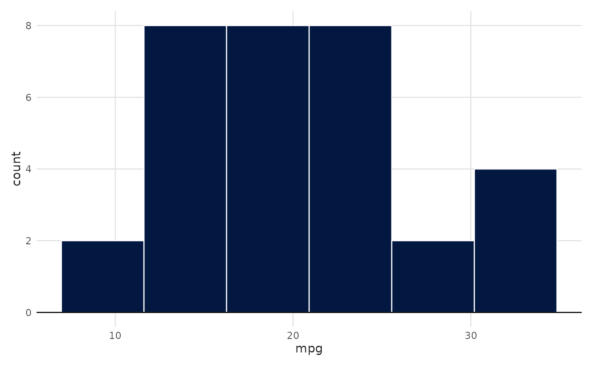
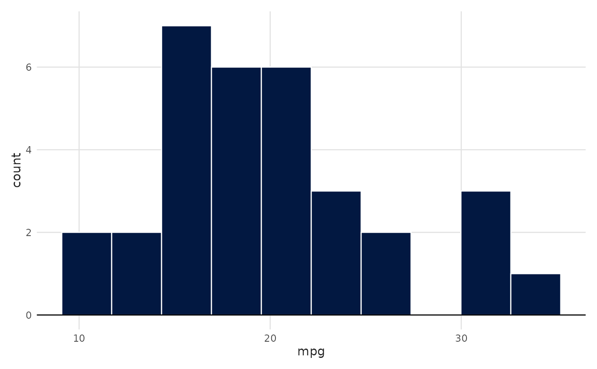
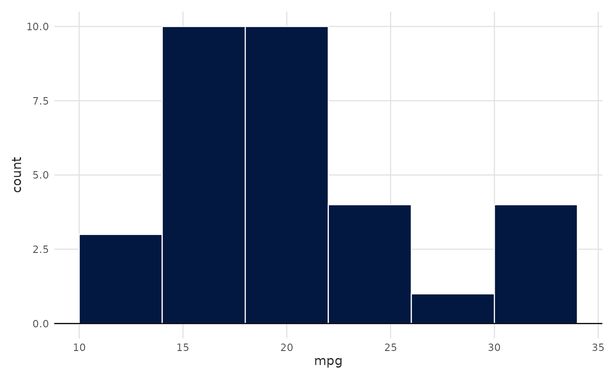
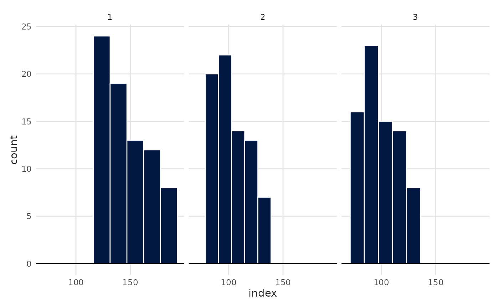

Plot a histogram chart
Usage
plot_histogram(
data,
x,
color = "#FFFFFF",
fill = NULL,
pal_name = "qual_benvi",
scale_name = "",
zero = TRUE,
bins = NULL,
method = "fd",
density = FALSE,
facet = NULL,
...
)Arguments
- data
A data frame.
- x
<
data-masked> Numeric variable mapped to the x-axis.- color
Color of the column border. Defaults to
"#FFFFFF"(white).- fill
Fill color for the columns. Either a color string (e.g.,
"blue","#021841") for a single static color, or a bare column name (without quotes) to map a grouping variable to fill color.- pal_name
Name of the palette used when
fillmaps a variable.- scale_name
Fill legend title.
- zero
Whether to draw a horizontal line at
y = 0.- bins
Number of bins. When specified, overrides
method.- method
Binning method. Choose
"fd"(the default),"FD","Scott","Sturges","Rice", or"sqrt". See Details. Ignored whenbinsis specified.- density
Whether to map density to the y-axis.
- facet
<
data-masked> Optional variable to facet the plot.NULL(the default) draws a single panel.- ...
Additional arguments passed to
ggplot2::facet_wrap().
Details
Binning methods
The method parameter controls how the function computes the bin width.
"fd"or"FD"Freedman-Diaconis rule. Uses the interquartile range: \(2 * IQR / n^{1/3}\).
"Scott"Scott's rule. The formula uses the standard deviation, \(3 * sd / n^{1/3}\).
"Sturges"Sturges' formula. Uses \(k = \lceil log_2(n) \rceil\) bins.
"Rice"Rice rule. Uses \(k = \lceil 2n^{1/3} \rceil\) bins.
"sqrt"Square-root rule. Uses \(k = \lceil \sqrt{n} \rceil\) bins.
Examples
# Default parameters use Freedman-Diaconis
plot_histogram(data = mtcars, x = mpg)

# Use bins to manually choose number of bins
plot_histogram(data = mtcars, x = mpg, bins = 10)

# Example of alternative methods: square root and Rice
plot_histogram(data = mtcars, x = mpg, method = "sqrt")
 plot_histogram(data = mtcars, x = mpg, method = "Rice")
plot_histogram(data = mtcars, x = mpg, method = "Rice")

# Facet by rooms category
spo <- subset(iqaiw, name_muni == "São Paulo" & rooms != "Total")
plot_histogram(data = spo, x = index, facet = rooms)
